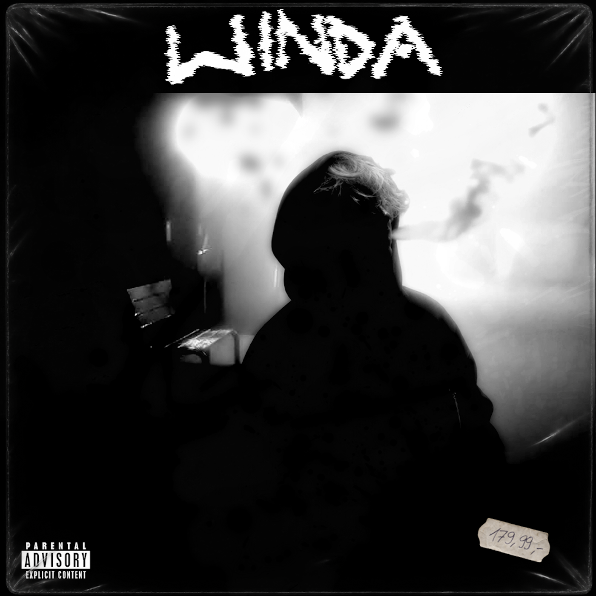

Tekst utworu „Winda”
[Zwrotka 1] Idziesz po schodach, znowu od samego rana, w jednej ręce zakupy, w drugiej noc nieprzespana. Piętro po piętrze ciężar niezmienny nosi, jednak ty z każdym krokiem zmienny jak cena 98. Ktoś cię mija na półpiętrze z cudzym kluczem w ręku, pewny krok, szeroki uśmiech, w oczach nie ma lęku. Nogi mówią: weź windę, przecież droga prosta, a głowa liczy dalej: noga, noga, noga. [Refren] Winda jedzie szybko, stanie między piętrami, schody powolne, ale zawsze pod nami. Kto jedzie windą, zapłaci przy wyjściu, i panie, panowie, kto idzie schodami, popatrzy na was z góry, nie stąpnie przed nami. [Zwrotka 2] Dałeś komuś klucz do drzwi, umowa niepisana, dziś ten klucz jest cudzy, a umowa sprzedana. Nikt nic nie krzyknął, zamek kliknął i tyle, tak jak twoja suka z umownym frajerem. Jak ogień i woda, jak igła i siopa. Ten, co mijał ciebie z serdecznym uśmiechem, zgubił w losie wiarę, utknął na półpiętrze. I nagle... Patrzcie na to, ludzie, wszyscy jesteście jebani. Tracę w was już wiarę, wszystko się obraca, tylko klucz raz oddany już nigdy nie wraca. [Refren] Winda jedzie szybko, stanie między piętrami, schody powolne, ale zawsze pod nami. Kto jedzie windą, zapłaci przy wyjściu, i panie, panowie, kto idzie schodami, popatrzy na was z góry, nie stąpnie przed nami. [Outro] Już nigdy nie wraca Już nigdy nie wraca